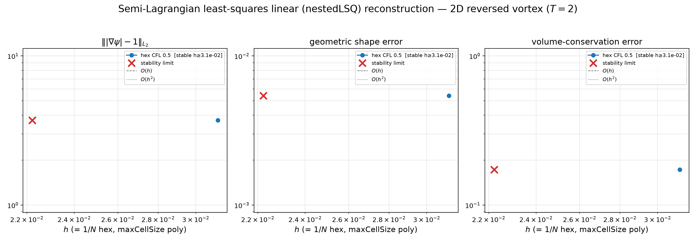
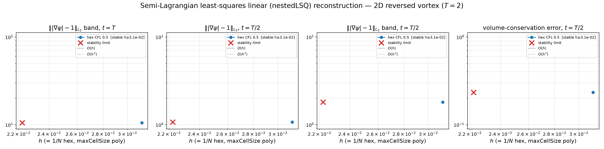
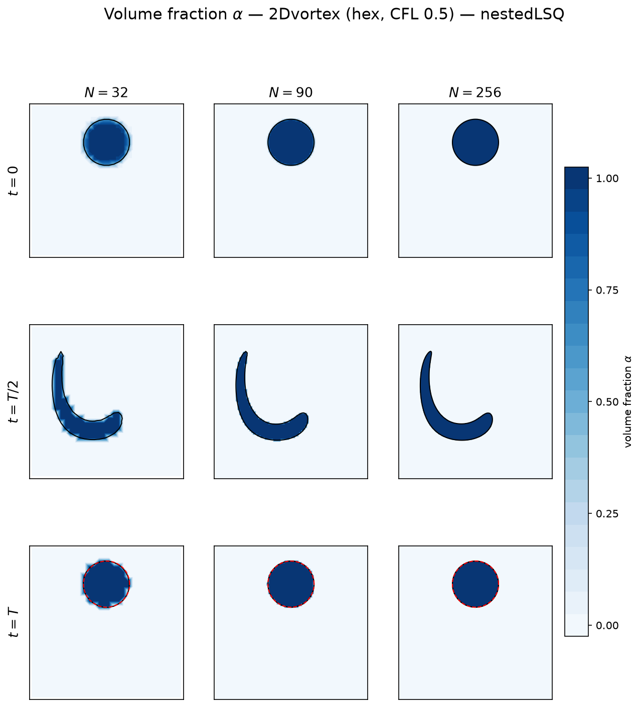
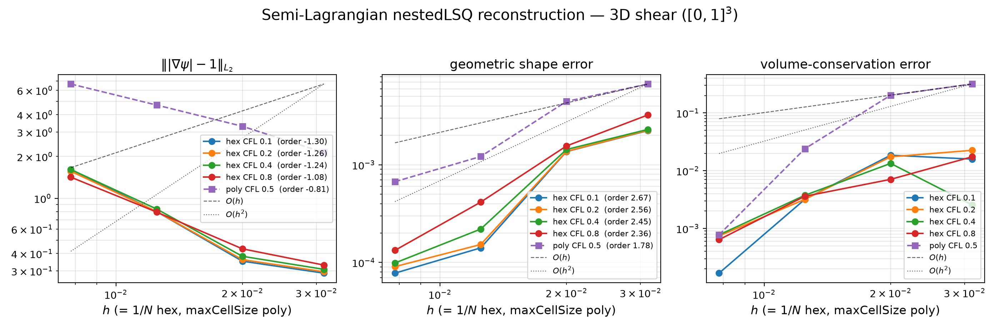
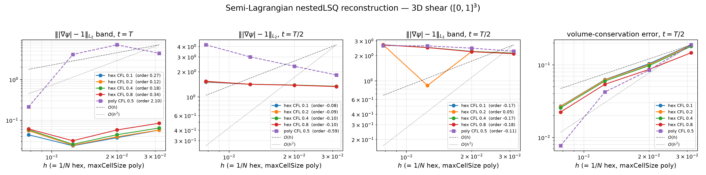
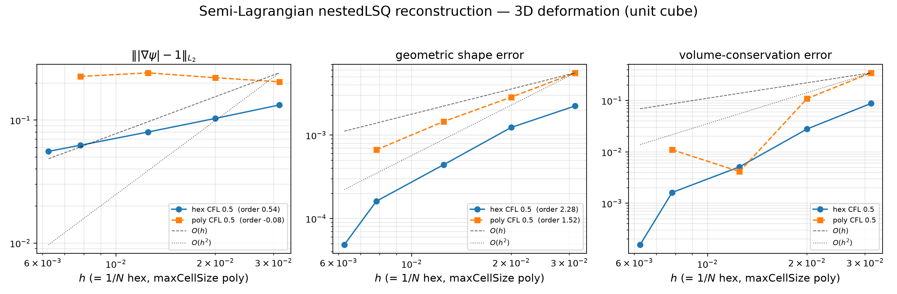
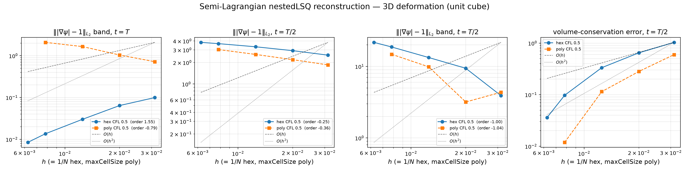
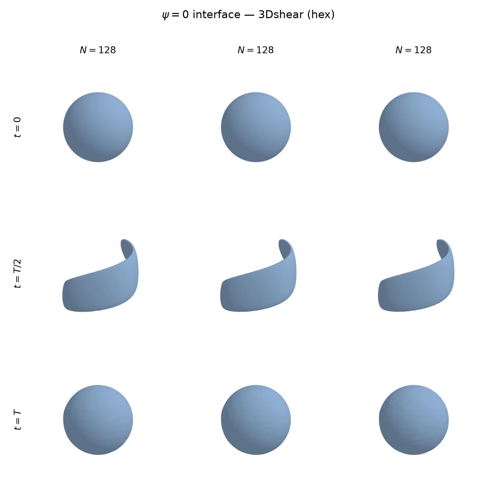
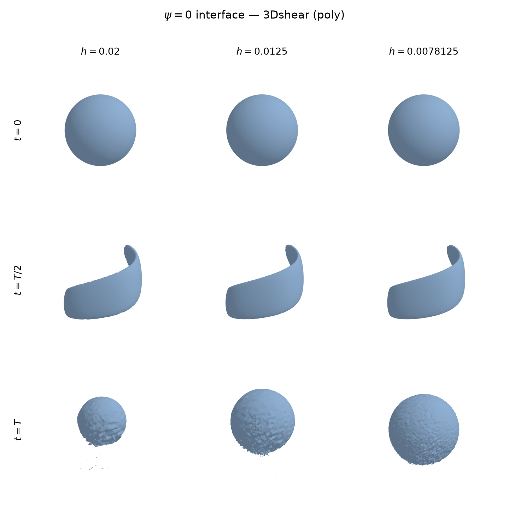
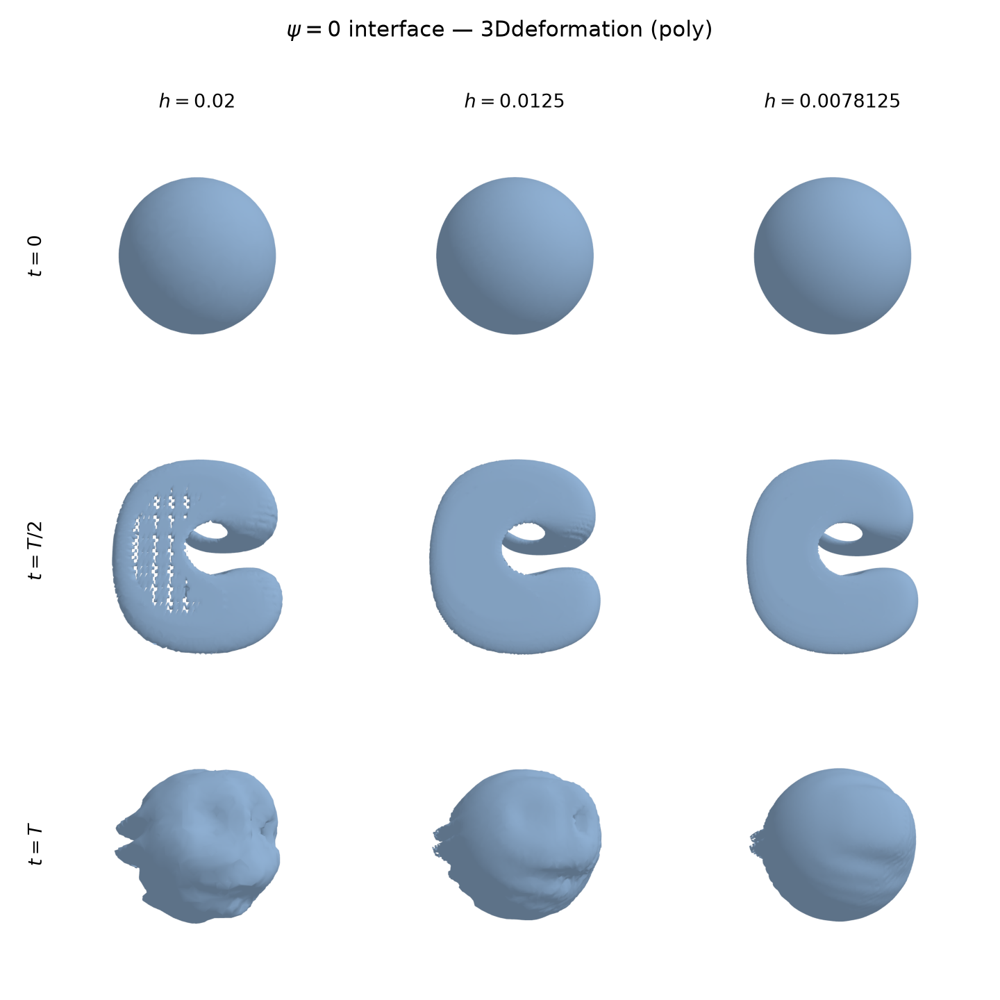

least-squares reconstruction — and why the raw Taylor extrapolation is not enough
a stable, memory-light linear transport method · and a cautionary tale
Tomislav Marić
MMA, TU Darmstadt
libleiaLevelSet | solver leiaSemiLagrangeLevelSetFoam
| reconstruction quadraticTaylor;
Independent method line next to the quadratic (UQWLSR) companion deck — same foot, same phase indicator, different reconstruction.
Navigation: → next part · ↓ slides within a part · Esc = overview · the footer always shows where you are.
Part 1 of 5
semi-Lagrangian update · second-order departure foot · least-squares linear reconstruction (and the Taylor trap)
The level set \(\psi\) is constant along characteristics of \(\partial_t\psi + \mathbf{u}\cdot\nabla\psi = 0\). Trace the characteristic arriving at a cell centre \(\mathbf{x}_c\) one step backward to its departure foot \(\mathbf{x}_d\):
\[ \psi^{\,n+1}(\mathbf{x}_c) \;=\; \psi^{\,n}(\mathbf{x}_d) \]Identical for the linear and the quadratic line — the reconstruction is the ONLY difference between the two methods.
nestedLSQ (the method)
\[ R_c = \psi^{\,n}_c + \mathbf{g}_c\cdot(\mathbf{x}_d-\mathbf{x}_c) \]\(\mathbf{g}_c\) = least-squares slope over the neighbour stencil \(\mathcal S_c\) (linear-basis restriction of the quadratic fit):
\[ \mathbf{g}_c = \arg\min_{\mathbf g}\!\sum_{i\in\mathcal S_c}\! w_i^2 (\psi_c+\mathbf g\!\cdot\!\mathbf d_i-\psi_i)^2 \]stencil averaging → STABLE
linearTaylor (the trap)
\[ R_c^{\mathrm T} = \psi^{\,n}_c + (\nabla\psi^{\,n})_c\cdot(\mathbf{x}_d-\mathbf{x}_c) \]gradient = the arrival cell's single cell gradient, extrapolated across the whole foot displacement — no stencil averaging
single-cell extrapolation → UNSTABLE in advection (next slide)
Both are degree-1 reconstructions of \(\psi^n\); the method line uses reconstruction nestedLSQ;
Reversed 2D vortex, CFL \(\tfrac12\), integrated to full reversal \(t=T\). The raw single-cell extrapolation overshoots where \(|\nabla\psi|\) is already too steep → steepens it further → positive feedback, worse on finer meshes (more steps):
| N | band \(\||\nabla\psi|-1\|\) — nestedLSQ | — linearTaylor | shape — nestedLSQ | — linearTaylor |
|---|---|---|---|---|
| 32 | 3.6e−2 | 1.1e+1 | 9.2e−4 | 5.4e−3 |
| 64 | 5.8e−3 | 2.9e+3 | 4.2e−4 | 9.9e−3 |
| 128 | 1.5e−3 | 1.4e+9 | 1.6e−4 | 2.2e−2 |
| 256 | 4.8e−4 | 2.0e+21 | 9.2e−5 | 3.1e−2 |
clipToStencilBounds does NOT cure it — the value near \(\psi=0\) stays in
range while \(|\nabla\psi|\) explodes in the field around itclipToStencilBounds: monotone clamp of the reconstructed value to
the stencil \([\min,\max]\) — required on polyhedra
(irregular stencils), inactive in smooth regions → order preservedstencil face;) for the polyhedral gradient:
12–16 face neighbours already over-determine the fit — compact, better conditionedThe unstable variant is not discarded — it is the reconstruction of the two-phase consistent-linear pipeline. In coupled flow, cell-centred curvature feeds surface tension back into the flow; a reinitialization-free high-order transport gives that loop zero damping. linearTaylor's dissipation damps it — and the coupled solver's own dissipation + short pre-equilibrium horizon keep linearTaylor in its stable regime:
| 2D stationary droplet, blow-up time [s] | N=64 | N=128 | N=256 |
|---|---|---|---|
| quadratic pipeline (UQWLSR + reconstructed κ) | 0.44 | 0.105 | 0.035 |
| consistent linear pipeline (linearTaylor + FVM κ) | 0.80 | 0.125 | > 0.1 |
Details: two-phase part of the quadratic companion deck + its negative-results deck.
Part 2 of 5
all error measures + the volume-fraction field itself
Reversed single vortex (Rider–Kothe): circle
\(r=0.15\) at \((0.5, 0.75)\), sheared, reversed at \(T/2\), exact solution at
\(t=T=2\) = the initial circle.
Ladder \(N = 32 \dots 256\) (ratio \(\sqrt2\)), CFL 0.5 and 1.0.
Every number on the following slides regenerates from
data/tables/lsl_convergence.csv + lsl_convergence_orders.csv
(single pipeline source, mirrored to the paper).



\(\alpha\) at \(t=0,\,T/2,\,T\) (rows) across the ladder (columns), CFL \(\tfrac12\). Black: \(\psi=0\). Dashed red on the \(t=T\) row: the exact reversed circle. The widened \(\alpha\) transition at \(T/2\) on coarse meshes is the first-order transport smearing; the under-resolved tail is lost irreversibly, and refinement recovers the reversed circle at the measured orders — the field-level picture behind the convergence plots.
Part 3 of 5
hexahedral AND polyhedral (cfMesh) ladders, same error battery
3D shear \([0,1]^3\) and 3D deformation (unit cube,
Enright), \(T=3\), CFL 0.5; hex \(N=32,50,80,128(,160)\) (ratio \(\sqrt[3]{4}\)); poly
\(h = \texttt{maxCellSize} = 1/32 \dots 1/128\) — \(h\) is the shared axis, so hex and
poly overlay directly. Poly runs: stencil face; clipToStencilBounds true;
Same conditional-stability limit as 2D CFL 1 (stable-envelope shape order 0.97), here at CFL \(\tfrac12\): the LeVeque–Liovic shear sustains stronger strain than deformation, steepening ∇ψ until the least-squares slope can't damp it. Flow-dependent: 2D vortex (N=256) + 3D deformation (N=160) stay inside it; strong 3D shear on hex does not, past N=80.
The poly face-neighbour stencil's stronger averaging pushes the shear limit past reach — a lower CFL, the face stencil, or band redistancing is needed to go finer on hex.

hex solid, poly dashed. Only the stable envelope is drawn + fitted; the first destabilized resolution is marked separately (red ×) with the runaway values off the axis. Hex shape order 1.18 (h≥2e−2) then |∇ψ| defect → 1e5; poly converges throughout (1.78).


Clean convergence on hex (shape 2.28, 5 levels to N=160) and poly (1.52); the band gradient defect DECREASES with refinement. The half-time thin scroll is the hardest gradient-quality state but the transport errors converge regardless.



\(\psi=0\) at \(t=0, T/2, T\) (rows) on the three finest resolutions (columns); hexahedral (left) and polyhedral (right). The hex finest column (N=128) carries the corrupted interface of the runaway gradient (the destabilization above); the poly montage recovers the sheet at every resolution.

The scroll's trailing edge thins below the cell size at \(T/2\); what survives reverses back into the sphere at the measured convergence rates.
Part 4 of 5
one framework, one keyword apart
| nestedLSQ (this deck) | UQWLSR (companion) | linearTaylor | |
|---|---|---|---|
| fit | LSQ linear over stencil | per-cell quadratic WLSQ | arrival cell's 1st-order Taylor |
| pure-advection stability | stable, CFL \(\le\tfrac12\) | stable, CFL-independent | UNSTABLE (|\(\nabla\psi\)| \(\to10^{21}\)) |
| kinematic order (2D shape) | \(\approx\)1.1 | \(\approx\)3 | \(-\)0.9 (diverges) |
| memory / cost | \(O(1)\)/cell, small solve | uncached recompute / cached PInv | gradient + dot product |
| two-phase capillary coupling | — | loop undamped, finer blows first | workhorse: outlives at every N |
Stencil averaging, not the polynomial degree, is what makes an SL reconstruction stable: nestedLSQ (linear + stencil) is stable; linearTaylor (linear, single cell) is not.
reconstruction uncachedQuadraticWeightedLeastSquares; — the accuracy championreconstruction quadraticTaylor; at CFL \(\le\tfrac12\) — memory-light, no ceilingreconstruction linearTaylor; — its dissipation damps the coupled loop,
its instability held in check by the short horizonPermanence under strong stretching (the \(O(1)\) half-time gradient defect) is an open problem for ALL lines — band-limited signed-distance maintenance is the subject of the redistancing line.
Part 5 of 5
make sl-linear # runs the 5 linearConv* studies (2D + 3D shear/deformation, hex + poly),
# regenerates every figure + table, mirrors them into BOTH
# lsl-level-set-article/data/ and lsl-level-set-presentation/data/,
# rebuilds this deck and compiles the paper PDFexport_slides: true → figures → dual-copy → deck rebuild)data/ — a verbatim, pipeline-maintained mirror
of the article's data/: slides and paper can never disagreemake sl-quadratic — same machinery, its own
theme (docs/semi-lagrangian-level-set/)workflow/Snakefile.sl-linear ·
config/linearConv*.yaml · paper:
../lsl-level-set-article/linearSemiLagrangianLevelSet.tex